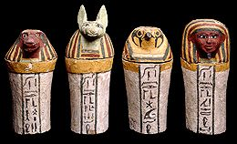

|
Internal organs returned
Before about 1000 B.C. the ancient Egyptians removed the internal organs from the body, dried them, then placed them inside four hollow canopic jars.

Canopic jars
After about 1000 B.C., mummification practices changed and the internal organs were put back into the body after being treated with natron. However, the ancient Egyptians continued to make canopic jars. Canopic jars that were placed in tombs at this time were either empty or solid.
Close
|